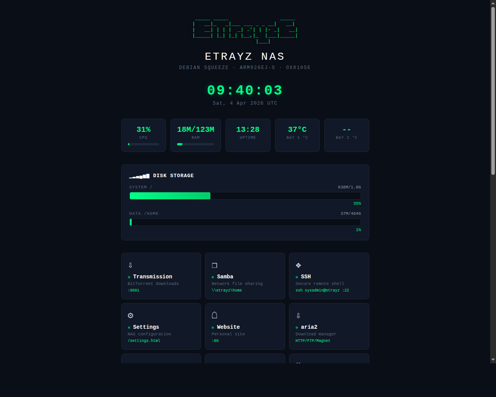
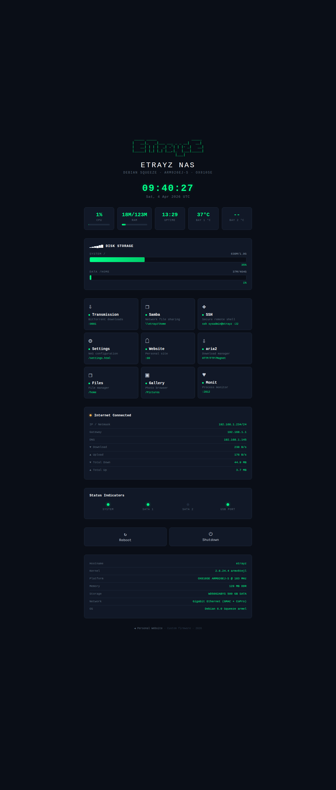
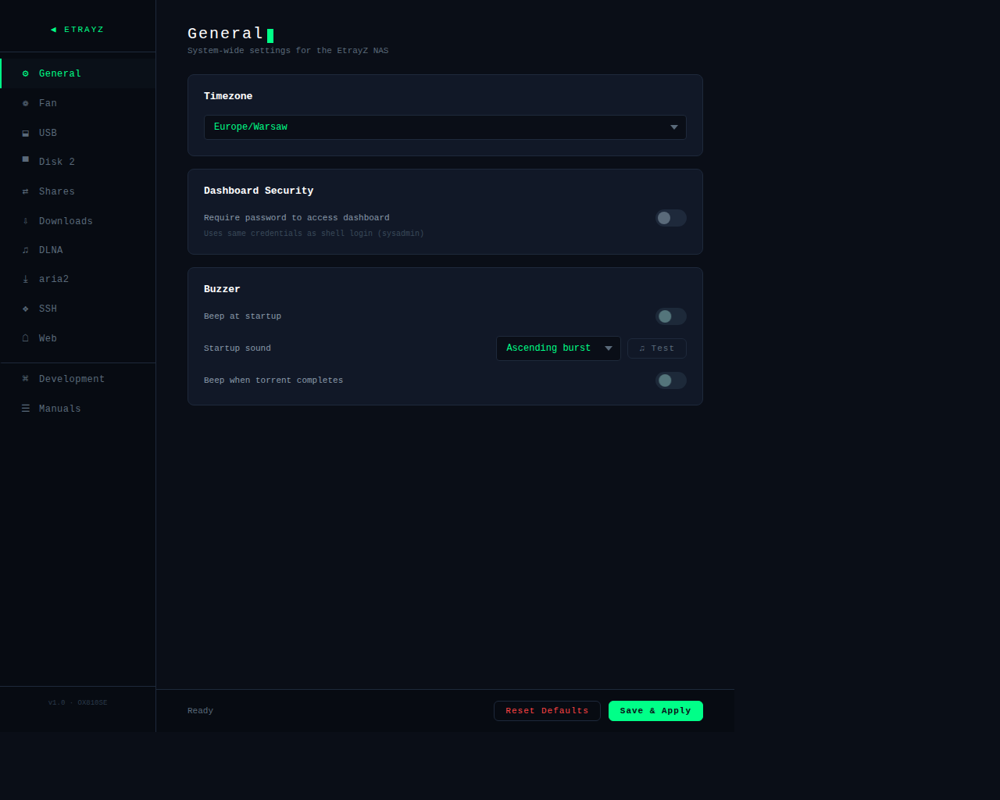
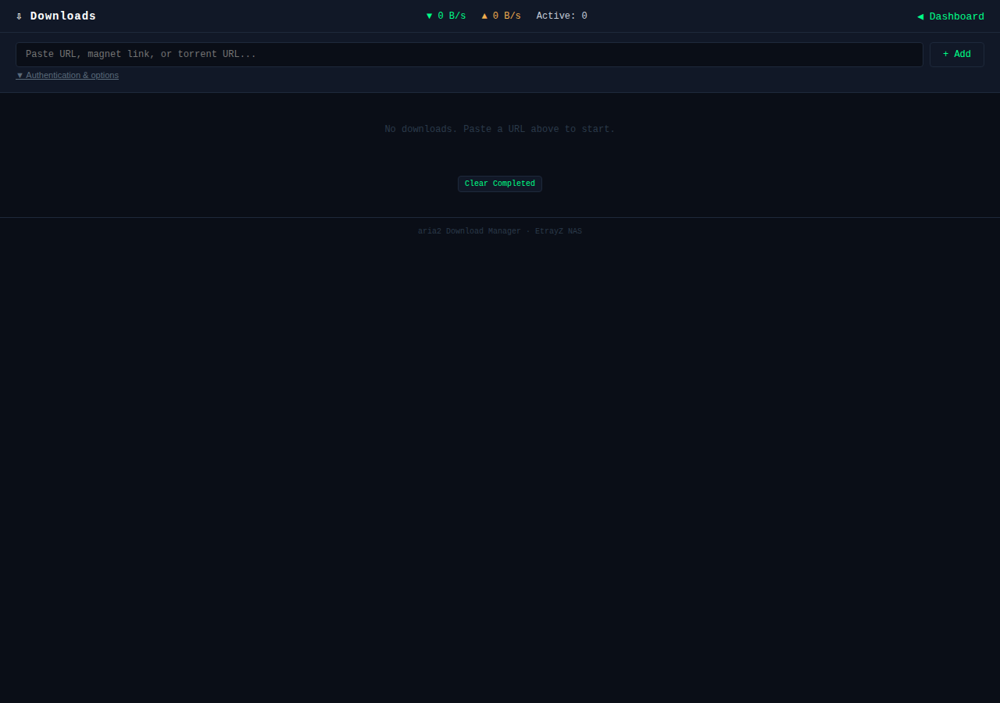
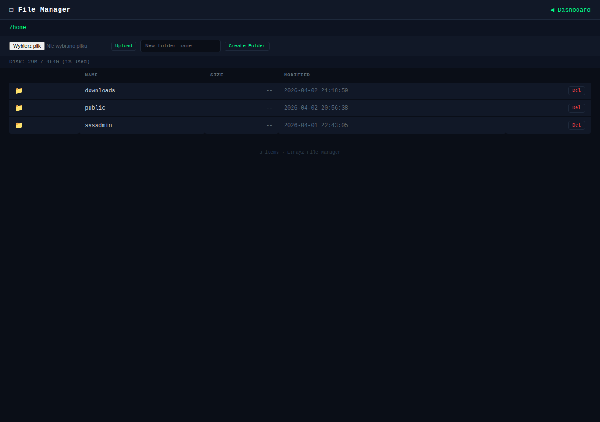
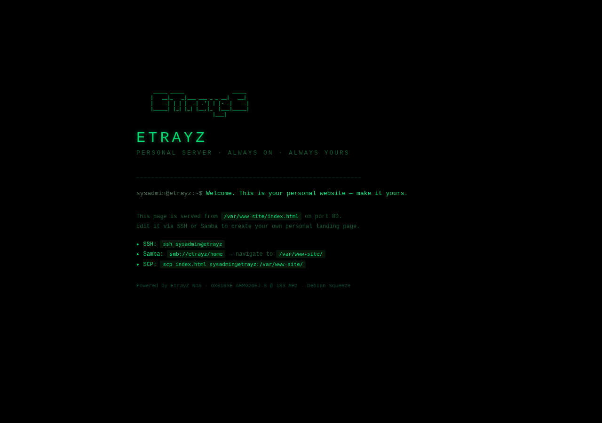
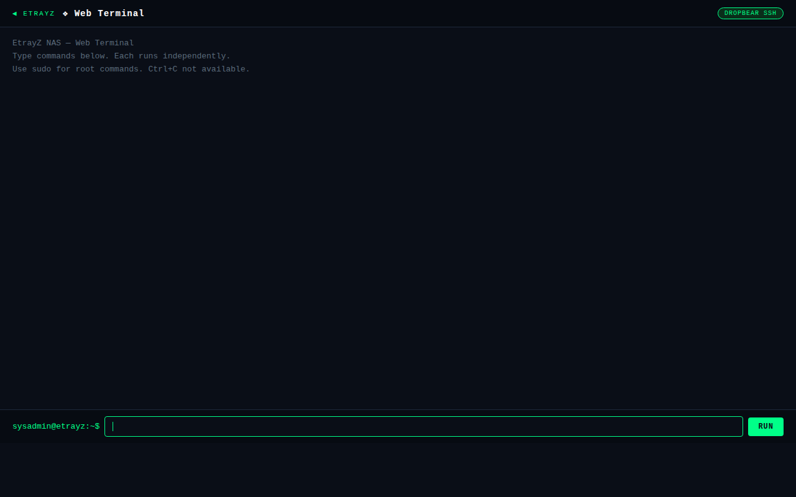

Embedded Linux / ARM







Complete custom firmware for the Xtreamer EtrayZ NAS — a 2010-era network-attached storage device with an OX810SE ARM926EJ-S CPU at 183 MHz, 128 MB RAM, and kernel 2.6.24.4. The original firmware was minimal and unmaintained; this project replaces it with a fully configured Debian 6 Squeeze system featuring a web dashboard, six web applications, and critical security tools updated to modern versions compiled natively on the device.
/homeDebian Squeeze (2011) ships with TLS 1.0-only tools and an ancient SSH server. All critical packages were compiled natively on the 183 MHz ARM — no cross-compiler needed:
packages/build-*.sh — reproducible native builds for all updated packagesrestore-from-image.sh — writes complete disk image (GPT + boot + rootfs + swap) and creates fresh /home partitionThe project ships a complete disk image (etrayz-system.img.xz, ~838 MB) that restores
the entire system in one command — GPT partition table, boot files at correct raw sector offsets,
md0 rootfs, and md1 swap. The /home XFS partition is created fresh to fill the rest of the disk.
sudo bash restore-from-image.sh etrayz-system.img.xz /dev/sdX
Check out the project on GitHub: etrayz-debian on GitHub
Back to Portfolio